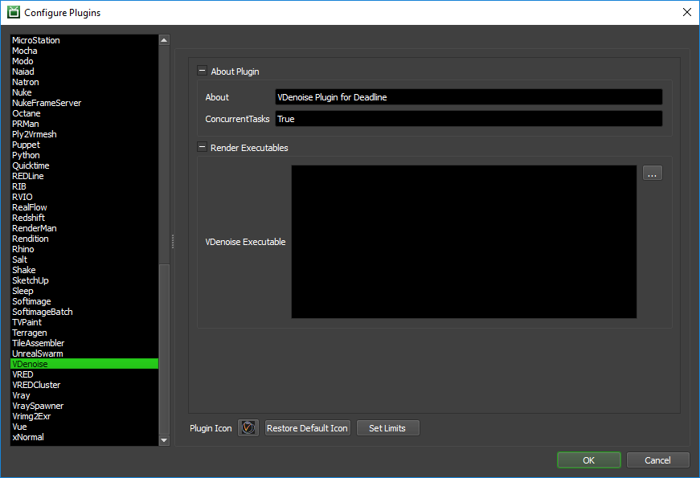

V-Ray VDenoise¶
Job Submission¶
You can submit VDenoise jobs from the Submit menu in the Monitor.
Submission Options¶
The general Deadline options are explained in the Job Submission documentation.
The VDenoise specific options are:
Input Image(s): Specify the input .vrimg or .exr file; can contain wildcards, f.e.
c:\path\to\files\sequence_????.exrto denoise a sequence of frames.Render Mode: Select one of three defined presets for radius/threshold/noise level multiplier, or select user defined settings.
Boost Preset: Boost the effect of the selected preset.
Skip Existing Images: Skip an input image if the corresponding output image already exists.
Denoise Render Elements: If False, the colors in the final image are denoised in one pass; when True, the render elements are denoised separately and then composited together. (default is False - single pass RGB denoising only)
Use GPU: If checked then, attempt to use the best OpenCL, fall back to CPU if unsuccessful.
Override Threshold: Override the threshold for denoising. This is required if your input image does not contain a noise level render element.
Threshold: Specifies threshold for denoising when noise levels render element is missing. Typically equal to the noise threshold for AA in V-Ray. (default is 0.001 and the denoiser relies on the noise level render element)
Override Strength: Override the Denoiser Strength.
Denoiser Strength: The main denoiser control. Larger values remove noise more aggressively but may blur the image too much.
Override Radius: Override the Pixel Radius.
Pixel Radius: Specifies pixel radius for denoising. Larger values slow down the denoiser, but may produce smoother results.
Automatically adjust Radius: Automatically adjust the denoising radius based on the noise level render element. Setting this to 1 may slow down the denoiser quite a bit for more noisy images.
Frame Blend: Use N adjacent frames when denoising animations. This reduces flickering between adjacent animation frames.
Number of Strips: Force image split in N strips. (default is -1 - use split count heuristic)
Plugin Configuration¶
You can configure the VDenoise plugin settings from the Monitor. While in power user mode, select Tools -> Configure Plugins and select the VDenoise plugin from the list on the left.
Render Executables
VDenoise Executable: The path to the vdenoise.exe executable file used for rendering. Enter alternative paths on separate lines. Different executable paths can be configured for each version installed on your render nodes.
FAQ¶
Which versions of VDenoise are supported?
VDenoise for V-Ray 3.4 and later is currently supported.
Error Messages and Meanings¶
This is a collection of known VDenoise error messages and their meanings, as well as possible solutions. We want to keep this list as up to date as possible, so if you run into an error message that isn’t listed here, please visit the Thinkbox Help Centre and let us know.
Currently, no error messages have been reported for this plugin.

{kind=link}
{kind=link}
{kind=link}